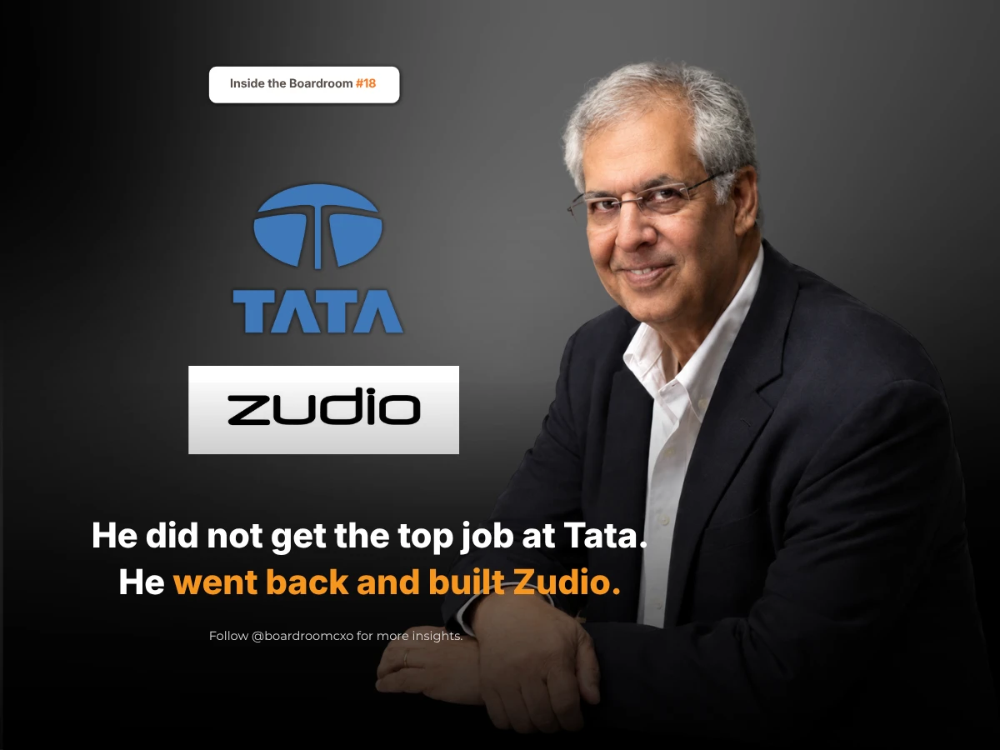

In March 2011, a five-member panel sat down to choose the next chairman of the Tata Group, a hundred companies and more than a century of history. One of the men they interviewed was the half-brother of the man who was retiring. Inside the group, most people assumed he was the obvious answer.
He did not get it. The job went to Cyrus Mistry, who had been sitting on the very panel that made the choice, and who was also his wife's brother.
Noel Tata went back to work.
Who Is Noel Tata?
Noel Tata has run Trent Ltd, the Tata Group's retail arm, since June 1999, when he became managing director of Westside, a chain his mother had started with the proceeds from selling Lakme to Hindustan Lever. The first store, bought from a British retailer called Littlewoods in 1998, was renamed Westside and became the base of what Tata would spend the next two and a half decades building. In October 2024, following Ratan Tata's death, he was made chairman of Tata Trusts, which owns roughly two-thirds of Tata Sons.
What Happened After He Was Passed Over
Most people passed over for the biggest job in Indian business would leave, or wait, or make noise. Noel Tata did none of it. He kept building the slow way: own labels instead of other people's brands, tight costs, a few more stores each year.
Then he saw something the market had not, that millions of Indians outside the big cities wanted fashion at low prices, and he put the company behind Zudio, the value-fashion format that would go on to outgrow everything else Trent owned.
By March 2026, Trent Ltd was running 1,286 stores across 321 cities. Zudio alone accounted for 963 of them. Revenue for the year was ₹20,074 crore, and the company now sits in both the Nifty 50 and the Sensex. One number in particular shows how he built it: Westside's online business is still only about 6% of its sales. He built a ₹20,000 crore retailer almost entirely out of physical shops, in an era when most retail growth stories are told through an app.
The Boardroom Lesson Most Career Profiles Miss
Most coverage of this story reads as a redemption arc: passed over, proved them wrong, got the bigger job in the end. What gets skipped is the thirteen-year stretch in between, where none of that outcome was visible or guaranteed. Tata did not build Zudio as a response to the 2011 decision. He built it because the retail business he was already running needed to be run well, regardless of what title sat next to his name.
That distinction matters more than it looks. A leader who treats an unwanted outcome as a detour keeps one eye on the exit. A leader who treats it as simply the next assignment tends to outperform, because the work gets their full attention instead of half of it.
A career is not decided by the job you do not get. It is decided by what you do the next morning.
Common Mistakes Boards Make With a Passed-Over Insider
Boards and search committees evaluating what to do with a strong internal candidate who was not chosen for the top role tend to make the same errors.
They assume disengagement is inevitable. It is common, but not universal, and the difference is rarely visible until years later. Watching what the person actually does with the operating business still in front of them is a far better signal than watching how they react in the weeks after the decision.
They undervalue what a founder-adjacent operator builds when no one is watching for it. Zudio was not a headline mandate handed down from the group. It was built inside a smaller, less glamorous business unit, the kind of assignment boards routinely treat as a consolation prize rather than a live test of judgment.
They mistake store-led growth for an old playbook. Trent's near-total reliance on physical retail, at a scale most competitors now chase primarily online, reflects a specific read of where Indian demand actually sits: outside the metros, at a price point online-first models struggle to serve profitably.
A Framework for Evaluating This Kind of Candidate
When we brief boards on a CXO search involving a candidate who was previously passed over elsewhere for a bigger mandate, we push for three specific checks.
- Look at what they did in the years immediately after, not the year of. The emotional reaction to being passed over tells you little. The operating decisions made in the following one to three years tell you almost everything.
- Separate the market call from the execution. Spotting underserved demand outside India's big cities was the insight. Building 963 stores against it, at cost discipline that kept the format profitable, was the execution. Boards should ask candidates to walk through both halves separately.
- Weigh scale against the size of the bet, not just the headline number. A ₹20,074 crore revenue business is the outcome. The decision that mattered was made years earlier, when the format was unproven and the safer path was simply protecting Westside.
Why This Belongs in the Boardroom, Not Just the Business Pages
This sits alongside the same succession question we raised in Sunil D'Souza's decision to turn down, then later take, the top job at Tata Consumer: the Tata Group has repeatedly tested senior leaders through a role they did not initially want, and the ones who treated that role as real work rather than a waiting room are the ones the group has since trusted with more.
The market does not reward the candidate with the most obvious claim to a title. It rewards boards that can tell the difference between someone who is owed the next job and someone who has already proven, in the job they actually have, that they can be trusted with it.
Frequently Asked Questions
Who is Noel Tata?
Noel Tata is the chairman of Tata Trusts, the philanthropic body that owns roughly two-thirds of Tata Sons, a position he took up in October 2024 after Ratan Tata's death. He has led Trent Ltd, the Tata Group's retail arm, since 1999, first as managing director of its Westside chain and later overseeing the growth of Zudio.
Why was Noel Tata passed over for Tata Sons chairman in 2011?
In March 2011, a five-member panel selecting the next chairman of Tata Sons chose Cyrus Mistry, who was serving on that same selection panel and was also Noel Tata's brother-in-law. Noel Tata, seen inside the group as a leading contender, was not selected and returned to running Trent's Westside business.
What did Noel Tata do after being passed over at Tata Sons?
Noel Tata continued building Trent Ltd the same way he had since 1999: private labels instead of licensed brands, tight cost control, and steady store additions. He later identified demand for affordable fashion outside India's large cities and put the company behind Zudio, which became Trent's primary growth engine.
How big is Trent Ltd under Noel Tata?
By March 2026, Trent Ltd operated 1,286 stores across 321 Indian cities, of which 963 were Zudio outlets. The company recorded revenue of ₹20,074 crore for the year and is listed on both the Nifty 50 and the Sensex. Westside's online sales remain about 6% of its total, reflecting a business built predominantly on physical stores.
What is Noel Tata's role today?
Noel Tata has chaired Tata Trusts since October 2024, giving him influence over Tata Sons through the Trusts' roughly two-thirds ownership stake, thirteen years after he was passed over for the Tata Sons chairmanship itself.
Related Reading
Sunil D'Souza Turned Down Tata's FMCG Job, Then Built It From Tea and Salt
Read → R · 02 Founder Leadership · September 2026Anish Shah: The Outsider Who Fixed Mahindra's ₹5,200 Crore Problem
Read → R · 03 Founder Leadership · September 2026Venu Nair Took the Job Nobody Wanted at Shoppers Stop. He Fixed It in a Year.
Read →Looking for a retail leader who builds through the years no one is watching?
We screen for candidates whose track record holds up when you look at what they did between the headline moments, not just the moments themselves. Brief us on your next CXO mandate and we will tell you what the market actually has to offer.
Brief Us on a Mandate See all Sales & Retail roles we fill →